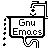

xehda's web index
personal suggested sites you should visit at least once in a lifetime.
Table of Contents

1. science
1.1. organizations to support
1.2. philosophy
1.3. psychology
1.4. tech
privacy guide: fight surveillance with encryption and privacy tools
huge disaster recovery plan by Solène Rapenne
lainchan
kiwix, store any website on your mobile or phone, easily
ipv4 flag day
how to build a solar-powered raspberry pi